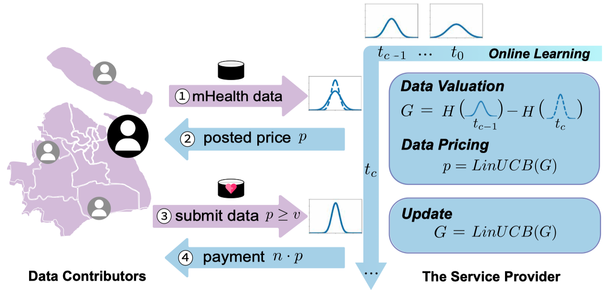

|
Anran Xu | 徐安然
I’m a fourth year PhD student in the Department of
Computer Science at Shanghai Jiao Tong University.
Starting from 2019, I have been in ANL Lab under the
supervision of Prof. Fan Wu
and Zhenzhe Zheng .
Prior to that, I received my bachelor degree at Shandong University.
My research interests include Network Economics and Online Advertising
Currently, I am focusing on intelligent decision-making under the uncertain environments.
I am also interested in Computer Vision in my spare time.
Email /
Google
Scholar /
GitHub /
Twitter
|
|
|

|
Online Data Valuation and Pricing for Machine Learning Tasks in Mobile Health
Anran Xu,
Zhenzhe Zheng,
Fan Wu,
Guihai Chen
INFOCOM, 2022
paper / slide
In this paper, we present the first online data Valuation And Pricing mechanism, namely VAP,
to incentive users to contribute mHealth data for machine learning (ML) tasks in mHealth systems.
Evaluation results show that VAP outperforms the state-of-the-art valuation
and pricing mechanisms in terms of online calculation and extracted profit.
|
|
|
OakInk: A Large-scale Knowledge Repository for Understanding Hand-Object Interaction
Lixin Yang,
Kailin Li,
Xinyu Zhan,
Fei Wu,
Anran Xu,
Liu Liu,
Cewu Lu
CVPR, 2022
paper
/
arxiv
/
dataset
/
code
Learning how humans manipulate objects requires machines to acquire knowledge from two perspectives:
one for understanding object affordances and the other for learning human’s interactions based on
the affordances. In this work, we propose a multi-modal and rich-annotated knowledge repository,
OakInk, for visual and cognitive understanding of hand-object interactions.
Check our website for more details !
|
website template
|